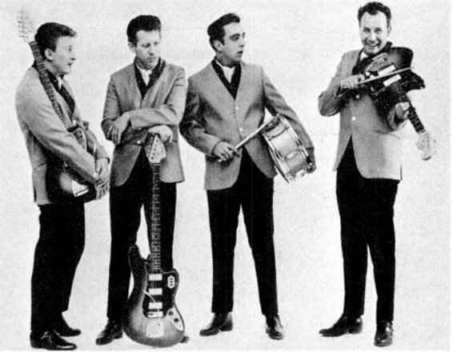

The Ventures were an instrumental guitar band from Tacoma, Washington, who reached No. 2 in 1960 with "Walk, Don't Run."
Wikipedia says 38 of their albums charted in the US in the 1960s and early 1970s.

Table of Contents
How the Band Formed
Don Wilson and Bob Bogle founded the group in Tacoma in 1958.
Several sources say they met at a used-car lot.
Nokie Edwards and Mel Taylor joined later, and the four became the classic 1962 to 1968 lineup.
From Bass to Lead Guitar
Edwards began on bass and later became the chief guitarist.
Bogle settled on bass.
That change set the band's classic arrangement of rhythm guitar, lead guitar, bass and drums.
Walk, Don't Run and Early Hits
Jazz guitarist Johnny Smith wrote "Walk, Don't Run" in 1954.
The band heard a Chet Atkins recording and rebuilt it with electric guitars.
Demos drew little interest, so the band pressed it on its own Blue Horizon label with help from Wilson's mother.
Dolton Records then released it in 1960.
Who Played Drums
Many fans assume Howie Johnson played drums on the hit.
The band's own website lists Skip Moore instead.
Mel Taylor, who later anchored the classic lineup, came after the original single.
The 1960 Chart Run
The single reached No. 2 on the Hot 100.
It also hit No. 3 on the Cash Box chart for five weeks in August and September 1960.
In Canada it reached No. 1 on August 29, 1960.
It made the R&B chart too, where it went to No. 13.
The debut album, also called Walk, Don't Run, peaked at No. 11 on Billboard.
The follow-up, "Perfidia," reached No. 15.
Alberto Domínguez composed that tune, and Josie Wilson and Bob Reisdorff are credited as producers.
See the rest of that year in our 1960 year guide.
Surf Years and Hawaii Five-O
The 1963 album The Ventures Play Telstar and the Lonely Bull reached No. 8 on Billboard and went gold.
It was made up entirely of covers of popular instrumentals, and it remains the band's highest-charting album.
Overall, Wikipedia ranks the group sixth among 1960s album chart performers.
In 1964 the band cut "Walk, Don't Run '64," a rearranged surf-style version that reached No. 8.
The remake fit the garage and surf rock sound of the day.
The 1964 year guide shows what else crowded the charts.
The band returned to the top ten in 1969 with its version of the "Hawaii Five-O" television theme.
Morton Stevens composed the tune for the series.
It reached No. 4 on the Hot 100 and spent 14 weeks in the top 100.
Tap Play to hear a song, or a heading to sort.
| Play | |||
|---|---|---|---|
| "Walk, Don't Run" | 1960 | No. 2 | |
| "Perfidia" | 1960 | No. 15 | |
| "Walk, Don't Run '64" | 1964 | No. 8 | |
| "Hawaii Five-O" | 1969 | No. 4 |
Japan, Honors and the Later Years
The band became immensely popular in Japan, according to Wikipedia.
Its recording of "Walk, Don't Run" entered the Grammy Hall of Fame in 2006.
The Rock and Roll Hall of Fame inducted the group in March 2008, with John Fogerty presenting, as the Rock Hall's inductee profile records.
Bogle died in June 2009, and Wilson died in January 2022 at age 88, NPR reported.
- Don Wilson, rhythm guitar
- Bob Bogle, bass
- Nokie Edwards, lead guitar
- Mel Taylor, drums
FAQ
Who were the original members of The Ventures?
Don Wilson and Bob Bogle founded the band in Tacoma, Washington, in 1958.
Nokie Edwards and Mel Taylor joined later to form the 1962 to 1968 lineup.
Did The Ventures write Walk, Don't Run?
No.
Jazz guitarist Johnny Smith wrote and first recorded it in 1954.
The band adapted it after hearing a Chet Atkins recording.
What was the biggest hit by The Ventures?
"Walk, Don't Run" reached No. 2 on the Billboard Hot 100 in 1960.
"Hawaii Five-O" reached No. 4 in 1969.
Are The Ventures in the Rock and Roll Hall of Fame?
Yes.
They were inducted in March 2008, with John Fogerty presenting.
Their recording of "Walk, Don't Run" entered the Grammy Hall of Fame in 2006.
Were The Ventures popular in Japan?
Yes.
Wikipedia says the band became immensely popular in Japan in the 1970s, and its discography lists many Japan-only releases.
Another surf-era instrumental name worth hearing next is Dick Dale.
Back to the 1960smusic.net homepage to explore every genre of the decade with The Ventures and more.